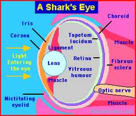
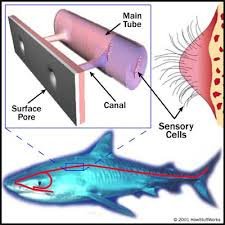
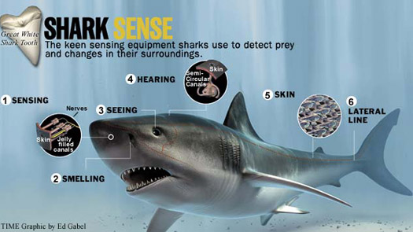

Sharks have what is known as a lateral line. This is an internal sense that allows them to detect vibrations in the water. This is primary used to find their prey in the water as well as the location of other sharks that may be in the area.
Sharks can also feel the electrical charge from prey in the water. The sense that can do this is called the Ampullae of Lorenzini. All living creatures give of some type of electricity as they move through the water. Sharks can easily detect such movements with the Ampullae of Lorenzini. Sharks also use this ability to help them navigate through the waters without any real effort involved.
The strongest sense for a shark is their smell. It is a common myth though that sharks can smell blood miles away and then they will find the person or animal that it is coming from. While sharks can smell blood, it often indicates to them that there is wounded prey they can easily overpower. It may surprise you to learn that the nostrils on a shark aren’t used for smelling. In fact, they aren’t even attached to their mouths. It isn’t an instinct of killing that the blood is going to create in them. In fact, if they aren’t hungry then they won’t even bother to look for the source of the smell. Some of the species though can smell and indicate even a single drop of blood in the water. This is just an example of how powerful their sense of smell really is.
Sharks have good eyesight for being in the water, so they can see well during the day or the night. However, they aren’t always able to distinguish the difference between people and other creatures that live in the water. That is why a person on a surfboard may be bitten by a shark. They appear to be a colorful fish for the shark to consume as a meal. They are able to see both in clear water and in murky water though. While they may not be able to get a clear vision of what it is, they know something is out there. It is also known that sharks are able to see in color. They eyes may appear large at times and then smaller at others. This is because they dilate depending on the amount of light that is available at any given time. Some species of sharks have protective coverings for their eyes. They will use them when they are being attacked or when they are attacking prey. This is an instinct reaction that helps to ensure their site isn’t hindered during the process.
It is believed that sharks can also hear extremely well. Some of the species have the ability to hear prey for miles from where they happen to be. They have openings on the sides of their heads that lead to the inner ear. They can hear sounds at an extremely low frequency from a long distance. You may find it interesting to learn the taste buds of a shark aren’t found on their tongue. Instead they are all over the inside of their mouths. Due to the keen senses that sharks have, they usually don’t have any problems finding their prey. They are very intelligent too so they know what they must do in order to survive.
  